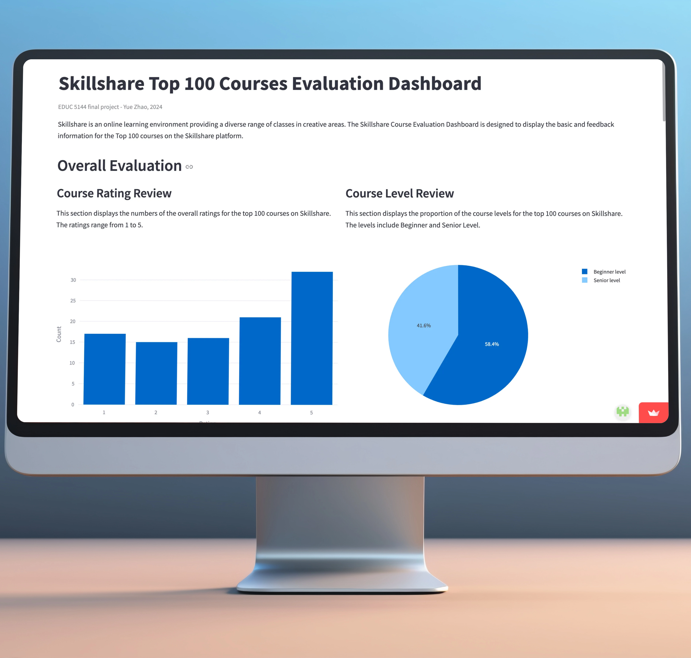
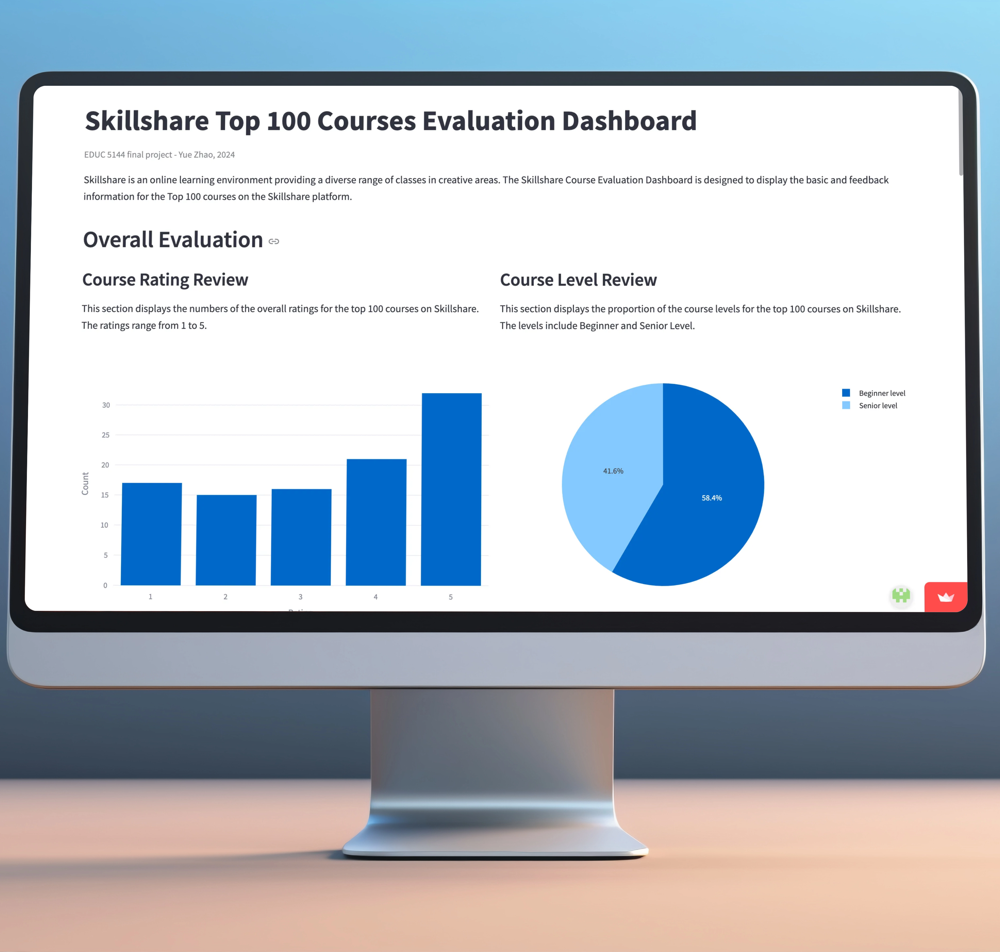
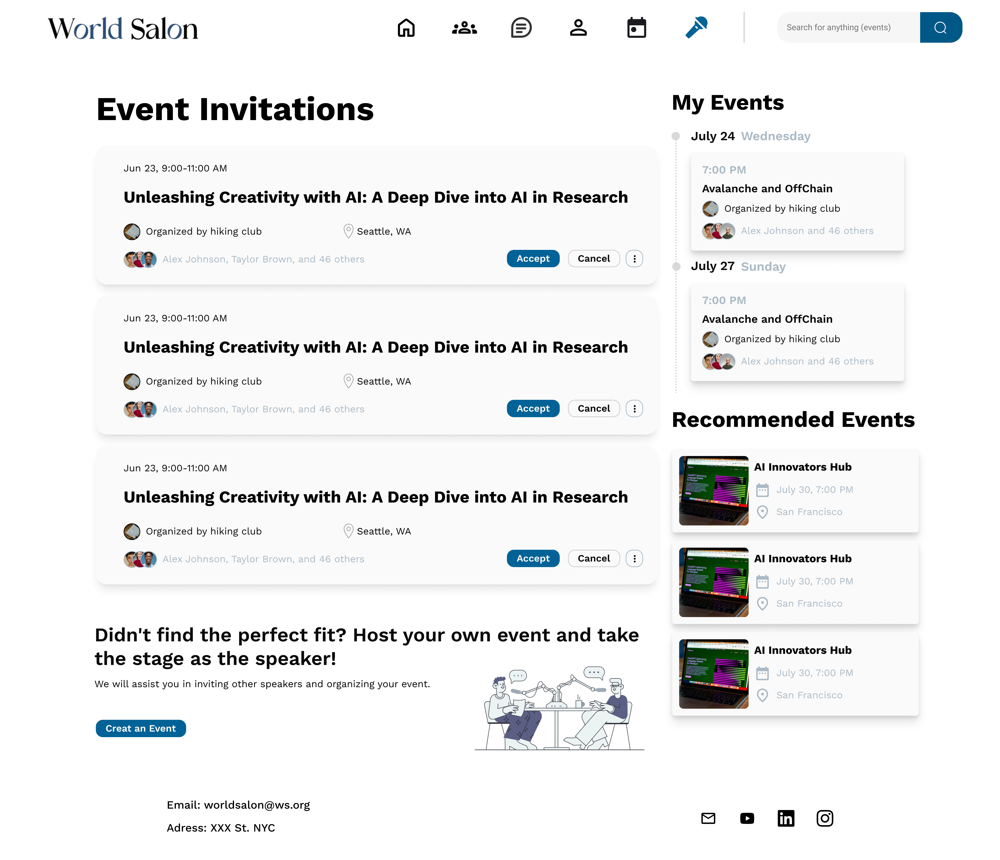

06/24 - 08/24 (3 months)
UX Research, UX Design (website and mobile app)
4 UX Designers
World Salon is an international event-hosting and networking platform. Our UX design team designed the website and mobile app from 0 to 1.
We delievered user interviews among seven users and analyzed their needs and pain points.
For Audiences
1. Ineffective Event Discovery: Difficulty in finding events that match their interests or schedules.
2. Limited Post-Event Networking: Lack of tools to connect with like-minded attendees or maintain relationships after events.
1. Cumbersome Invitation Management: managing and organizing speaking invitations is time-intensive and inefficient.
2. Difficulty Understanding Audience Needs: collecting feedback and tailoring content to the audience's preferences requires significant effort.
We conducted detailed competitor analysis with other networking and event-hosting app and concluded our opportunities.
1. Create a chat group of all the participants automatically after they join the events, so they can network as early as possible.
2. Add some features to encourage participation in online events, like voting, refering friends.
1. Clear and informative profile contain all the important personal information.
2. Multiple ways of networking: in-person events, online speaking, real-time discussion rooms and chat groups.
3. Interactions between users: share thoughts, refer events, etc.
How might we design a more effective event-hosting and networking platform for both speakers and audiences?
For the website interface: the section layout is designed to prioritize features based on their frequency of use, ensuring a more intuitive user experience.
For the mobile interface: The step by step user experience enables speakers to seamlessly accept invitations, review event details and edit Q&A questions with ease.
Speaker engagement is low because speakers are often very busy, and the number of available speakers is limited. To attract more audience and improve engagement, we want speakers to participate more actively in our events.
When asked, speakers expressed that they are driven by knowing what the audience thinks about their field, as this can inspire them.
To motivate speakers to accept more event invitations, we implemented a new approach. By creating a sense of exclusivity and curiosity, this change encourages speakers to commit while also addressing their desire for audience insights.
Before: Speakers could browse audience questions when deciding whether to attend an event.
After: Speakers can no longer browse audience questions unless they accept the event invitation.